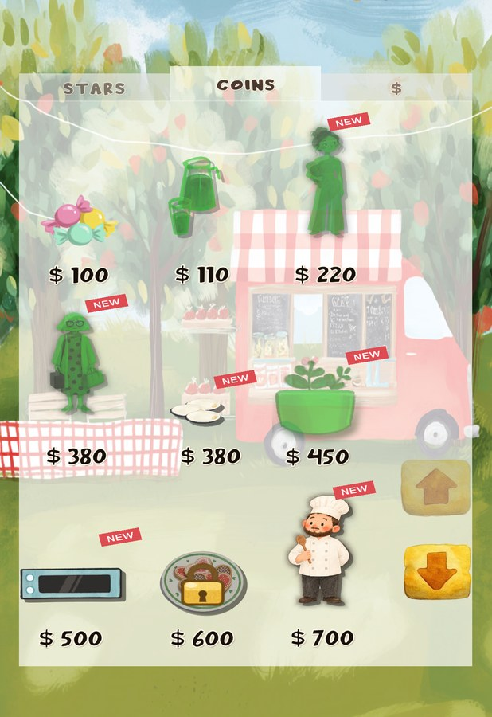
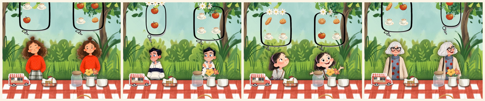
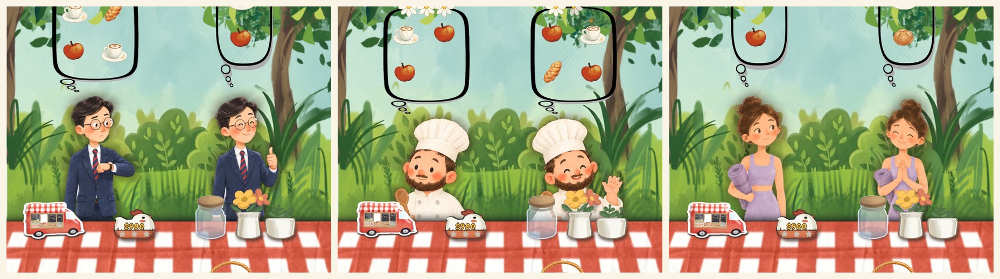
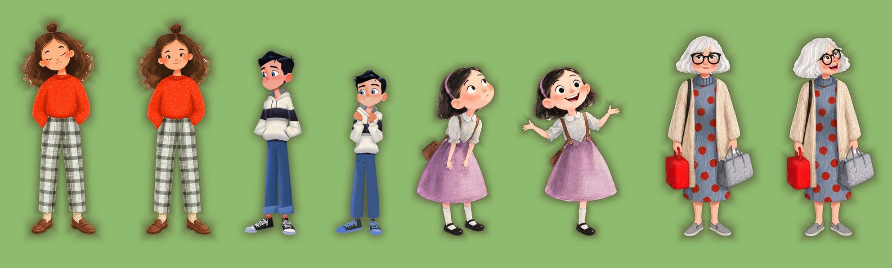
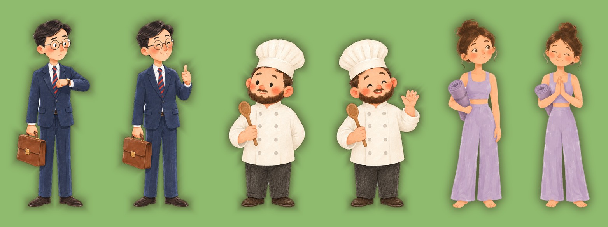

Food Truck Cafe
Your report for 14 November. 26.11.13 is live; 26.11.21 (build 28) is waiting for Apple's review; test build 29 is on TestFlight.


1Next
You
Test build 26.11.21 (29) is on TestFlight since 14 November, 12:50 PST. It is build 28 plus the working Remove Ads tab. Open the shop: three tabs, Stars, Coins, $. Buy Remove Ads once; on TestFlight it costs nothing.
At Apple: 26.11.21 with build 28 is waiting for review since 12:12 PST, with the Remove Ads purchase attached. Build 28 cannot show that purchase, so Apple may reject. Your word: Remove Ads ships with this weekend's release, which replaces it either way. If you want build 28 to pass alone as the bug-fix release, say "pull it": I cancel the submission and send build 28 again without the purchase.
This weekend's release so far: Remove Ads working (build 29), pop, blender and coin quieter, and the new star rule once the measurement is in.
Yoga lady sitting poses: the brief for ChatGPT goes out at 3:09 PM, when its free pictures are back.
Me
Measure every day for the star rule and show the table. Watch for Apple's answer.
2Q&A
Foaming sound: six from Pixabay. Tick the one you want.
The foam in the game lasts 1.3 seconds per cup; I cut your pick to fit, as with the pour. I cannot hear them; I picked by title and length. The foam sound in the game now is the one I made.
Stars: your rule, as I understand it. Nothing is changed in the game yet.
- 3 stars: every customer who came that day got their whole order. One customer leaving, or leaving with part of an order, and it is not 3 stars.
- 2 stars: at least 90 % of the day's customers got their whole order, 90 % rounded to a whole customer.
- Money no longer decides stars. Coins and tips stay what you spend in the shop.
- Every level must be able to reach 3 stars; candies count as fair help.
| Customers that day | Needed for 2 stars | Lost allowed |
|---|---|---|
| 8 | 7 | 1 |
| 10 | 9 | 1 |
| 15 | 13 | 2 |
| 19 | 17 | 2 |
Two gaps I fill; tick if they are wrong:
Next: the autoplay plays every day perfectly and counts customers lost. The table comes here before the rule goes in.
3Current
Remove Ads tab: why it never showed, and the fix, 14 November. My mistake: the purchase code sat behind a switch nothing in the project turns on, so every build up to 28 had an empty stand-in and the $ tab could not appear. Fixed; build 29 on TestFlight has it. In the editor the shop now shows three tabs.

Pop, blender and coin at the middle volume, 14 November. Your word: "tune these to middle". Pop is 6 dB down, blender 9, coin 10; they now sit with the steam and the serve clink. In the project, not in a build yet.
| Sound | Before | After |
|---|---|---|
| Pop | ||
| Blender | ||
| Coin |
All customers, 13 November. In the game on your word: Kid, Grandma, Businessman and Chef repainted, and the Boy with his own head on a cleaned body (same face, pixel for pixel; black and white sneakers in both moods; no longer smaller when happy). Girl and Yoga are unchanged. Every pair is one size and stands on one spot.




4MVP
Your words, 14 November: "we will do another release this weekend"; Remove Ads goes out then; new star rule: 3 stars = every customer served their whole order, 2 stars = 90 %.
5Backlog
Do in the polish release. Unticked items go when you say clean up.
6Analysis, 9 to 13 November
Read 13 November, 15:00 PST. Days are UTC; the 13th is not over and its ad numbers are not in. Players and ads from Unity. App Store Connect is signed out in Chrome, so Apple's downloads and page views wait for your sign-in.
| Day | New players | Finished the tutorial | Days finished | Ad requests | Ads shown | Ad revenue |
|---|---|---|---|---|---|---|
| Sun 9 | 1 | 1 | 3 | 0 | 0 | $0 |
| Mon 10 | 2 | 2 | 0 | 9 | 2 | under $0.01 |
| Tue 11 | 1 | 1 | 1 | 4 | 1 | under $0.01 |
| Wed 12 | 0 | 0 | 0 | 2 | 0 | $0 |
| Thu 13 | 1 | 0 | 0 | |||
| Five days | 5 | 4 | 4 | 15 | 3 | under $0.01 |
| Week before, 2 to 8 Nov | 6 | 1 | 0 | 14 | 3 | $0.05 |